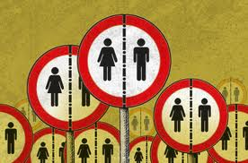
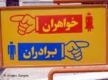

پذيرش > تریبون > مقالات > این نوشته هیچ تیتری ندارد مگر این کلیشه: عدمِ پذیرشِ زنان در بیش از 70 رشته دانشگاهی (...)


 این نوشته هیچ تیتری ندارد مگر این کلیشه: عدمِ پذیرشِ زنان در بیش از 70 رشته دانشگاهی یا حذفِ تدریجی زنان از عرصههای اجتماعی/ نیلوفر انسان این نوشته هیچ تیتری ندارد مگر این کلیشه: عدمِ پذیرشِ زنان در بیش از 70 رشته دانشگاهی یا حذفِ تدریجی زنان از عرصههای اجتماعی/ نیلوفر انسان
19 مرداد 1391 - - نسخه قابل چاپ
خشتِ اول
نتایج اولیه آزمون سراسری سال ٩١ در حالی اعلام شده است که دفترچه انتخاب رشته داوطلبان کنکور سراسری حاکی است از اعمال گسترده تفکیک جنسیتی و سیاست های تبعیض آمیز در نحوه پذیرش داوطلبان دختر. بر اساسِ گزارشهای منتشر شده، در سال جاری در بیش از 30 دانشگاهِ کشور و نیز بیش از 70 رشته دانشگاهی، داوطلبان به صورت تک جنسیتی پذیرش خواهند شد. آنچه که در اولین نگاه به این آمار توجه را جلب میکند آن است که این میزان نسبت به سال گذشته از رشد قابل توجهی برخوردار شده است و این موضوع، خود، نگرانیهای زیادی را برانگیخته است.
در بیشترِ گزارشهای منتشر شده در این باره اما تنها به اشارهای به آمار و ارقام و رشتههایی که در سالِ تحصیلیِ پیشِ رو از پذیرشِ دختران سر باز زدهاند، اشاره شده است، بدونِ آنکه نگاهی تحلیلی بر موضوع رود و یا از تاثیراتِ بلند مدتِ آن سخن به میان بیاید. به همین دلیل تیترِ این یادداشتِ را گذاشتهام ؛ این نوشته هیچ تیتری ندارد مگر این کلیشه: عدمِ پذیرشِ زنان در بیش از 70 رشته دانشگاهی یا حذفِ تدریجی زنان از عرصههای اجتماعی؛ چرا که معتقدم تنها اشارههای آماری با تیترهایی نسبتا مشابهِ هم، به کلیشه کردنِ موضوعی میپردازد که به هیچ وجه نمیباید کلیشه را بربتابد و از موضوعی مهم به سوژهای آزمایشگاهی بدل شود بدونِ آنکه همدلیای را برانگیزد و به واکاوی موضوع بپردازد. هم از این حیث است که بررسی فرهنگیِ موضوع و تاثیراتِ بلند مدتِ آن، حائز اهمیت است چرا که موضوع را روشنتر میسازد و اذهان را با موضوع بیشتر درگیر میکند.
طرحِ تفکیک جنسیتی به عنوانِ گفتمانی در «سامانهی حجاب»
پروینِ اردلان در مقالهای با عنوانِ "استراتژیهای مقاومتِ زنان در گفتمانِ رسمیِ حجاب"، در سالِ 1385، چنین مینویسد: « از 8 مارس 1357 که بيش از 30 هزار زن اولين اعتراض جمعي و فمينيستي شان را به اجباري شدن حجاب شکل دادند و «در بهار آزادي / جاي حق زن خالي» را سردادند، تاکنون 27 سال مي گذرد. يعني نزديک به سه دهه است که قانون حجاب بر بدن ما زنان حاکم، ومسئله پوشش مان از مباحث محوري در گفتمان سياسي دوران مان شده است. طي اين سال ها، تلاش هاي بسياري شد تا مفهوم حجاب در تمام جوانب زندگي مان رو بنماياند ونه تنها تصوير«باحجاب»، بلکه«رفتار باحجاب» و «کلام باحجاب» را در زندگي مان نهادينه کند؛ تا، با جاذبه و اشعه اي که داريم مردان را کور نکنيم! اگر در دوران پهلوي با مفهوم «کشف حجاب» به عنوان يک کشف مردانه و شاهانه آشنا شديم، بعد از انقلاب هم، با«حجاب اجباري»، به عنوان اجبارو مقابله به مثلي مردانه، جبر را به جاي آزادي بر تن مان کرديم. پس از آن، مفاهيم مردانه ساز بسياري به فرهنگ لغت حجابمان وارد شدند: «بي حجاب، باحجاب، بدحجاب، خيابان حجاب، باشگاه ورزشي حجاب، مانتوفروشي هاي زنجيره اي حجاب ...» همين طور اشکال ديگري از حجاب به فرهنگ لغت شهري ما راه يافتند تا عرصه عمومي را از زنان بگيرند و حجاب را در نظام ارزشي ما بگنجانند. مانند آموزش رايگان حجاب!: «حجاب مصونيت است نه محدوديت، حجاب ارزنده ترين زينت زن است، خواهرم حجاب تو کوبنده تر از خون من است،...» و نصب الزامات حجاب مانند: «رعايت حجاب اسلامي الزامي است» يا «از پذيرفتن زنان بدحجاب معذوريم» در ادارات، مراکز آموزشي، بر روي بليط ها و داخل اتوبوس ها، ديوارنوشته ها و اعلانات تبليغاتي در سراسر شهر...که گاه ناظر را به ياد «پارک کردن مساوي است با پنچري» مي انداخت! و همچنين حراست هاي منتظر در ادارات و سازمان ها و...براي «معاينه فني حجابمان»! با اينهمه تصاوير رنگارنگ براي آموزش بي وقفه حجاب، دور بي راه نبود اگر ناگهان تصويرگشت کميته يا «لباس هاي وحشت زا» را مي ديديم، ناخودآگاه دست هايمان به سمت روسري هايمان مي رفت. با آنکه بررسي تاريخي مفاهيم در رويکرد تاريخي شان امري مهم به شمار مي آيند سخن از حجاب گاه نيز در هر مقطعي معاني گوناگون و کارکردهاي مختلف داشته است. اما به طورکلي، کشف حجاب، يا حجاب اجباري با هر تعريفي که از آن ها ارائه شده است در گفتمان سياسي ما به مثابه يک سيستم همسان ساز براي اعمال سياست جنسيتي نظام عمل کرده است. اين سياست هم در قالب قانون و استفاده از زور و هم از طريق نهادهاي آموزشي و هم از طريق شيوه هاي تبليغي نقش اقناعي داشته است ...»

این مقدمه که از مقالهی پروینِ اردلان که ذکرِ آن رفت انتخاب شده است، به دُرستی به چگونگی شکلگیری گفتمانِ رسمی حجاب میپردازد و همانطور که خود نیز ذکر کرد، بررسی تاریخیِ آن را را جزئی مهم از مطالعه آن میداند. اما بیش از آنکه بحثِ حجاب در مقولهای به نامِ «گفتمان» جای بگیرد، حجاب را میتوان تحتِ مفهومِ «سامانه» بررسی کرد و از آن به «سامانهی حجاب» تعبیر کرد. سامانهای که بیشک، طرحِ تفکیکِ جنسیتی در نهادِ دانشگاه که در سالهای اخیر شدت گرفته و در سالِ 91 حتی در رشتههایی چون مترجمی زبانِ انگلیسی، زبان و ادبیاتِ انگلیسی، آموزش زبان انگلیسی، حسابداری و ... نیز شاهدِ آن هستیم نیز بخشی جداییناپذیر از آن است.
اما اگر بنا باشد کوتاه و اجمالی نگاهی بر مفهومِ سامانه بیندازیم، میتوان آن را به این شکل تعریف کرد: « ... قدرت معطوف به حیات به عنوان بخشی از گسترش مدرنیته، دانشهایی را به کار میگیرد(برنامهریزی شهری، کیفرشناسی، جمعیتشناسی، تکنولوژیهای آموزشی و ...) که هم بدن فردی و هم بدن اجتماعی را تنظیم میکنند. میشل فوکو -اندیشمند فرانسوی- در کار خود بر مواردی چون پزشکینهشدن زندگی انگشت میگذارد و نشان میدهد که چگونه با محوریتیافتن گفتمان پزشکی غربی، ابعاد مختلف زندگی افراد در جوامع غربی به انقیاد دانش پزشکی و مروجان گفتمانی آن درمیآید.گفتمان از مفاهیم محوری کار فوکو بود. او ابتدا مفهوم گفتمان را در آثار خود به کار گرفت که باید آن را از جنس سخن/کلام/متن دانست. در دورهی بعدیِ کارش، فوکو اصطلاح جامعترِ اپیستمه (نظام دانایی یا فضای معرفتی) را پیشنهاد که مبین راه و رسمی بود که گفتمانها برای دیدن چیزها فراهم میکنند(جونز، 2003) که باز هم از جنس همان گفتمان(سخن و متن) است. اما در دورهی پایانی کار فوکو، به ویژه در بررسی تاریخ جنسیت با مفهوم سامانه(دیسپوزیتیف ) روبرو میشویم که افزون بر عناصر گفتمانی، عناصر مادی و نهادی(نهادها، ساختارهای معماری، قوانین، ابزارهای سازمانی و ...) را نیز دربر میگیرد(کابُرن, 2007). او در کتاب اراده به دانستن(فوکو، 1386) و در بررسی سکسوالیته، آن را نامی میداند که میتوان به سامانهای تاریخی داد و سپس خودِ سکس را مفهوم و انگارهای معرفی میکند که در سامانهی سکسوالیته ساخته میشود ... » (اکبری ؛ 1390) در واقع، فوکو از منظرِ بحثِ سامانه است که مفهومی به عُنوانِ حکومترانی بر اذهان یا Governmentality را مطرح می¬کند. عناصرِ موجود در یک سامانه دست در دستِ یکدیگر در تلاشند تا بخشِ بزرگی از سوژههای خود را تحتِ نظارت و کنترل داشته باشند. به واقع یک سامانه حاملِ گفتمانهایی است که آن را به پیش میرانند که برای مطالعهی آن سامانه، آن گونه که فوکو(1386) میگوید (به نقل از اکبری؛ 1390) ، بررسیِ «تکنولوژی درونی این گفتمانها، ضرورت عملکردشان، تاکتیکهایی که به کار میبندند، اثرهای قدرتی که مبنایشان است و این گفتمانها ناقل آنهایاند» اهمیت دارد.
به همین سیاق است که در «سامانهی حجاب» نه تنها بحثِ حجابِ اختیاری و اجباری و جلوه نمادینِ آن که در فُرمِ انتخابِ پوشش شکل مییابد، مطرح است، که گشتِهای ارشاد و سلفهای دانشگاهیِ جدا و موشکافی شکل و شمایل و پوششِ زنان هنگامِ ورود به سالنِ تئاتر و دانشگاه و ... ، "باشگاهِ ورزشیِ حجاب" و حتی خیابانِ حجاب! و شعارهایی با محوریتِ موضوع حجاب روی دیوارها از دورانِ مدرسه تا به حال و ورزشی که قهرمانانش فقط مرد هستند و زنانش به خاطرِ چیزی به اسمِ حجاب آن هم از نوعِ سفت و سختش محرومند از چشیدنِ حسِ موفقیت و قهرمانی و تبلیغِ مانتوهای اسلامی در تلویزیون که تلاش دارد به لحاظِ اقتصادی نیز در این جبهه سودآور باشد و تفکیک جنسیتی در دانشگاهها و حذفِ پذیرشِ زنان در 70 رشته دانشگاهی و مقولاتی از این دست، نیز مطرح است. عناصری که هر کدام از آنها بخشِ بزرگی از جامعه را به خود مشغول داشته است. چنانچه به عُنوانِ مثال در وبلاگِ سیاست بازی در یادداشتی با عُنوان "ماجرایِ جنجال برانگیزِ انتخابِ رشته در دانشگاهِ شهید چمرانِ اهواز" به تاریخِ 18 مرداد 91، که البته با رویکردی موافق با حذفِ وسیعِ پذیرشِ زنان در بسیاری از رشتههای دانشگاهی در سالِ 91 نوشته شده، میخوانیم: « ... پس این طرح چنانچه به صورتِ صحیح اجرا شود، علاوه بر آنکه موردِ تاییدِ اسلام میباشد، باعثِ افزایشِ سطحِ حجاب و عفاف در دانشگاهها و حرکتِ شتابان به سوی اسلامی شدنِ دانشگاه، افزایشِ ارامش روانیِ دانشجویان، اطمینانِ خاطرِ خانوادهها و بسیاری مزایای دیگر خواهد شد ... »
پس به نظر میرسد که در بررسی مسالهی حجاب در ایران، ابتدا ضروریست که آن را به عنوان مسالهای فراتر از یک فُرم در پوشش بررسی کرد. در حالِ حاضر، حجاب به مثابه یک «سامانه» مصداق مناسبی از ابزارهای حکومترانی بر اذهان یا Governmentality در ایران است که سودمندیهای اقتصادی و سیاسی خاص خود را با مدیریت و تنظیم بخشِ بزرگی از جمعیت، شکلدهی به ذهنیتها و در یک کلام به انقیاد کشاندن شمار بزرگی از سوژهها(افراد) در جامعه اعمال میکند و طرحِ تفکیکِ جنسیتی در بخشِ بزرگی از رشتههای دانشگاهی در سالِ تحصیلیِ پیشِ رو نیز، کارکردِ گفتمانیِ خاصِ خود را در این سامانه دارد و به سیاقِ خود تلاش دارد تا نیمی از جمعیتِ حالِ حاضرِ کشور یعنی زنان را در فضایی محدود به انقیاد کشانده و با درگیر کردنِ مدامِ آنها در گفتمانهایی چُنین، آنها را به خود مشغول داشته و تحت نظارت بگیرد.
پیامدهای بلندِ مدتِ طرحِ تفکیکِ جنسیتی
اما اِعمالِ چنین طرح و طرحهایی چه پیامدهای بلند مدتی بر کیفیتِ زندگی زنان در جامعه خواهد داشت و به طورِ کُل چگونه سطحِ زندگی افراد را فارغ از جنس و جنسیتِ ایشان متاثر خواهد کرد؟ پاسخ به چنین پرسشی با توجه به مواردی دیگر از قبیلِ سیاستگذاری جدید دولت در ارتباط با جمعیت که گویا از پیامدهای سرشماری جمعیت در سالِ 90 بوده و «در عرضِ کمتر از یک ماه خبرِ حذفِ بودجهی تنظیمِ خانواده، حذفِ برنامههای رایگانِ وازکتومی و توپکتومی، به کارگیری بستههای تشویقی مانند افزایشِ ساعاتِ شیردهی، افزایشِ کمک هزینهی نگهداری فرزندان و برداشتنِ تنبیهاتِ قانونی برای فرزندِ دوم به بعد برای خانوادهها را نقلِ محافلِ دولتی کرده» (به نقل از مطلبِ فرزندآوری حقِ زنان است نه وظیفهی آنها ؛ نوشتهی نفیسه آزاد؛ منتشر شده در سایتِ تغییر برایِ برابری)، نگرانیهایِ زیادی را دربابِ عقبگرد در حوزهی پیشرفتهایِ هر چند اندک و آهستهی اجتماعیِ زنان برمیانگیزد.
حذفِ پذیرشِ زنان در گروههایی چون گروهِ زبانهای خارجه، حسابداری، روانشناسی عمومی، تاریخ، راهنمایی و مشاوره، مهندسی کامپیوتر و رشتههایی دیگر از این دست که هر کدام تا پیش از این فارغالتحصیلانِ زنِ بیشماری را به خود دیده است که اتفاقا هر کدام در زمینهی تحصیلیِ خود مشغولِ به کار بودهاند و درآمدهای خوبی را نیز کسب کردهاند، تنها به سببِ تفکیکِ جنسیتی نیست. بلکه به معنای سد بستن به روی درآمدزاییِ زنان و به معنای بستنِ دستِ زنان برای داشتنِ شغلی از آنِ خود و به طبعِ آن استقلالِ مالی است. گلناز، 32 ساله و مهندسِ کامپیوتر که خود 8 سال است در یکی از بانکهای خصوصی مشغولِ به کار است در این باره میگوید: «من بسیار راحتتر از آن چیزی که تصورش را بکنید کار پیدا کردم. چیزی در حدودِ یک میلیون تومان هم حقوقم است و به هر حال مزایایی نیز دارم. اصولا شما اگر روزنامههای کاریابی را باز کنید بیشترین شغلی که همیشه درخواستِ استخدامش وجود دارد همین مهندسی کامپیوتر است، خصوصا برای بانکها و همیشه هم نیمی از پذیرشها به زنان اختصاص دارد چون به هر حال ما هنوز در زمینهی کامپیوتر کشوری در حالِ توسعه هستیم.» و ادامه میدهد: «حالا شما تصور کنید با این طرحِ تفکیکی که پیش آمده و خیلی دانشگاهها هم در زمینه مهندسی کامپیوتر نیز آن را اعمال کردهاند به تدریج و به تبعِ این ما شاهدِ حذفِ پذیرشِ زنان در مشاغلِ مرتبط با مهندسیِ کامپیوتر نیز خواهیم بود لابُد و این اصلا برای زنان و استقلالِ مالیِ آنها خوب نخواهد بود.»

پیش از این نیز خبری منتشر شده بود مبنی بر اینکه ایران رتبهی چهارمِ میزانِ طلاق را در سطحِ جهان به خود اختصاص داده است (به نقل از مردم سالاری؛ منتشر شده به تاریخِ 18 مرداد 1391) چنانچه طرحِ تفکیکِ جنسیتی ادامه داشته باشد و بنا باشد هر سال نسبت به سالِ قبل با شدتِ بیشتری زنان را از نهادِ دانشگاه حذف کند، بر عکسِ آنچه که به نظر میرسد اتفاقا شاهدِ نابسامانیهای اجتماعیای بیشتری خواهیم بود. زنانی که از همسرانِ خود جدا شدهاند نیازمندِ کسبِ درآمدند و حذفِ آنها از رشتههای عموما پولساز و به طبعِ آن حذفِ آنها از مشاغلِ درآمدزا میتواند به آسیبهای بیشماری منجر شود که ادامه یافتنِ ازدواجهایی اشتباه و از پسِ آن رشدِ فرزندانی که با ناهنجاریهای اجتماعی دست به گریبانند از جمله آنهاست. همچنین است افزایشِ آمارِ تنفروشی (بدیهی است که این موارد تنها برای اشاره به آسیبهای بلندمدتِ حذفِ تدریجی زنان از عرصههای دانشگاهی و شغلی کشور است، بیآنکه قصدِ آن داشته باشم که در بابِ تنفروشی به قضاوت بپردازم).
از دیگر سو نیز سنِ ازدواج به هر ترتیب به دلایلِ پیشرفتهای اجتماعیِ زنان و افزایشِ استقلالِ مالی و سطحِ تحصیلی آنها بالاتر رفته است. حال جامعهای را تصور کنید که در بلندمدت، زنانِ آن جامعه، که تا چندی قبل از آن به هر ترتیبی که بود خود را در عرصههای اجتماعی بالا کشیده بودند به سببِ حذف از عرصههای دانشگاهی و شغلی و به طبعِ آن دورماندن از درآمدزایی و پولسازی، برای تامینِ منابعِ مالیِ خود مجبور میشوند به هر ازدواجی تن دهند که نتیجهی آن چه خواهد بود جز همان افزایشِ روزافزونِ آمارِ طلاق و شکلگیری خانوادههایی که جز آسیب، چیزی را بر اجتماع تحمیل نخواهند کرد، چرا که به هر صورت حذفِ اجتماعیِ زنان تنها شکلِ صوری ماجراست و ذهنیتِ رو به جلو حرکت کرده را نمیتوان حذف و یا دستکاری کرد.
اما پیامدهایِ بلند مدتِ این ماجرا، که البته در زنجیره ای جداناشدنی با دیگر طرحهایی است که در پیِ انزوای هر چه بیشترِ زنان هستند تنها به مواردِ فوق خلاصه نمیشود و میتوان فهرستِ بلندی را برایِ آن شکل داد که از آن جمله است شکلگیری جمعیتی افسرده از زنان که تنها بدل شدهاند به ماشینهایی از خود بیگانه برای فرزندآوری و یا به اصطلاح تولیدِ بچه که نه اجازهی دستیابی به رشتههای تحصیلیِ مورد علاقهی خود و احیانا پولساز را دارند و نه عطفِ به این موضوع قادرند شغلی موردِ علاقهی خود داشته باشند و درآمدی کسب کنند و همین افسردگیِ احتمالیِ نیمی از جمعیتِ کشور خود حاملِ هزینهای سنگین (که می-تواند از هزینه در زمینه درمان آغاز شود و تا تحمیلِ هزینههایی دیگر ادامه پیدا کند. حتی مردان نیز از این موضوع متضرر خواهند شد، چرا که آنان نیمی از جامعه هستند و لازمه ی سلامتِ روح و روانِ آنها، سلامتِ روح و روانِ نیمی دیگر از جامعه، یعنی زنان، است) بر نهادهای دولتی خواهد بود.از دیگر پیامدهای این طرح میتوان به تحمیلِ هزینهی گزاف بر خانواده ها برای فرستادنِ فرزندانِ دختر خود به خارج از کشور برای ادامه تحصیل در رشته های موردِ علاقه آنها اشاره کرد که البته این موضوع با توجه به اعمالِ چنین محدودیتهایی، به خودیِ خود چیز بدی نیست اما در بلند مدت میتواند به لحاظِ اقتصادی و اجتماعی حاملِ ضررهای جبران ناپذیری در سطوحِ کلانِ باشد. از این جهت خوب است که مسئولان به هنگامِ اِعمالِ چنین تصمیم هایی، به پیامدهای بلند مدتِ آن نیز بیاندیشند و آن را از نظر دور نگاه ندارند.
فقط کافی است روزی را تصور کنید که اعلام شود با کمبودِ معلمِ زبان انگلیسیِ زن مواجه هستیم، و چون معلمِ مرد نمیتواند آموزش دختران را بر عهده بگیرد، کلاسهای زبانِ دختران تعطیل خواهند شد و آموزش زبان در مدارس به دختران منتفی. شاید هیچگاه چنین نشود اما گمان میکنم که اعمالِ چنین طرحهایی به همین راحتی، میتوانند بدل به یک فاجعه شوند. حتی تصورِ چنین فاجعهای نیز دردناک است.
ارسال به
بالاترین
،
توییتر
،
فریندفید
،
فیسبوک
در همين بخش :
 دهمین دورۀ مراسم تندیس صدیقه دولت آبادی ۱۳۹۲ دهمین دورۀ مراسم تندیس صدیقه دولت آبادی ۱۳۹۲
کارت پستالهایی به بهانهی هشت مارس و به یاد همهی مبارزین راه برابری
بیانیه بیش از 350 تن از مدافعان حقوق زنان به مناسبت روز جهانی زن؛ زنان هر روز فرودستتر میشوند
لباسی که برای تن ما دوخته اند! /اعظم بهرامی
چالشها و چشمانداز فعالیت مدنی زنان
ديگر بخش ها :
طرح یک میلیون امضا
|
مقالات
|
سایت نوشته ها
|
اخبار
|
گزارش كمپين
|
گفت و گو
|
علیه سکوت
|
كوچه به كوچه
|
نامه های شما
|
گزارش ویژه
|
گفتگو با اعضا
|
ویژه سالگرد کمپین
|
تصویر برابری
|
دل آرام علی
|
تریبون
|
مقالات
|
تاریخ شفاهی
|
خارج از چارچوب
|
کتابخانه
|
درباره کمپین
|
کمپین در شهرها
|
کمپین در بند
|
صدای تغییر
|
ویژه 22 خرداد
|
لایحه حمایت از خانواده
|
گالری
|
عشا مومنی
|
امیر یعقوبعلی
|
خدیجه مقدم
|
راحله عسگری زاده و نسیم خسروی
|
پروین اردلان،جلوه جواهری، مریم حسین خواه، ناهید کشاورز
|
زینب پیغمبرزاده
|
سعیده امین، سارا ایمانیان، محبوبه حسین زاده، ناهید کشاورز و همایون نامی
|
احترام شادفر
|
نسیم سرابندی زاده،فاطمه دهدشتی
|
وبلاگ مهمان
|
پرونده خرم آباد
|
دستگیری ها
|
مریم مالک
|
پرستو اللهیاری
|
مهرنوش اعتمادی
|
سمیه رشیدی
|
Other Languages
|
همراهان
|
«فراخوان کمپین ده روز با بهاره هدایت»
| English
|